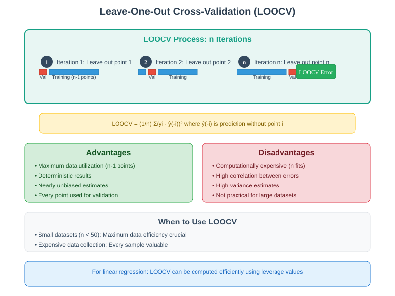
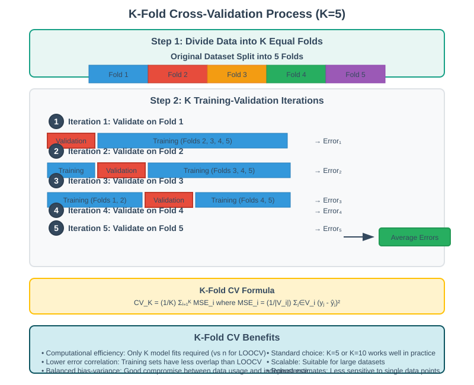
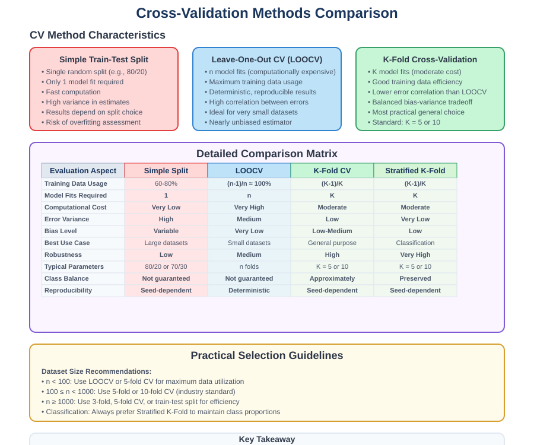
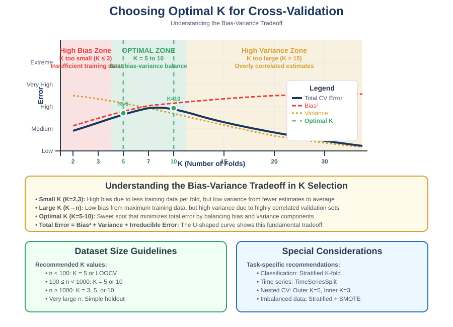
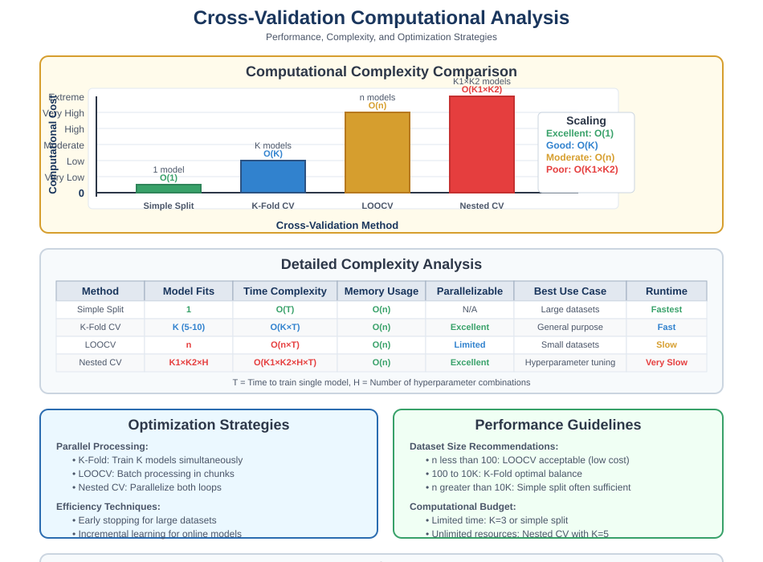

Cross-Validation Techniques
📋 Quick Navigation
- 🎯 Introduction
- 🔍 Leave-One-Out Cross-Validation (LOOCV)
- 📊 K-Fold Cross-Validation
- ⚖️ Comparison of CV Methods
- 🎛️ Choosing Optimal K
- ⚡ Computational Considerations
- 🛠️ Implementation Guidelines
- 📚 References & Further Reading
🎯 Introduction
Cross-validation techniques address the fundamental limitations of simple train-test splits by providing more robust and reliable model evaluation methods. These approaches mitigate the problems of random validation set selection and data waste while providing better estimates of generalization performance.
Core Problems with Simple Validation
Traditional validation approaches suffer from several key limitations:
- Random validation set dependency: Results vary based on which data points are randomly selected for validation
- Data inefficiency: Significant portions of data are held out from training
- Single assessment: Only one evaluation per model configuration
- High variance: Performance estimates can be unreliable, especially with small datasets
Cross-Validation Solution
Cross-validation systematically addresses these issues by:
Multiple evaluations → Averaged performance → Robust estimates
The fundamental principle involves systematic resampling where each data point contributes to both training and validation across different iterations.
Mathematical Foundation
For a dataset with n samples, cross-validation provides:
CV Error = (1/K) Σ MSE_i
Where K is the number of folds and MSE_i is the error on the i-th validation fold.
🔍 Leave-One-Out Cross-Validation (LOOCV)
Conceptual Framework
LOOCV represents the extreme case of cross-validation where each individual data point serves as a validation set exactly once.

Algorithm Description
def leave_one_out_cv(X, y, model):
"""
Leave-One-Out Cross-Validation implementation
"""
n = len(X)
errors = []
for i in range(n):
# Create training set (all except point i)
X_train = np.concatenate([X[:i], X[i+1:]])
y_train = np.concatenate([y[:i], y[i+1:]])
# Single validation point
X_val = X[i:i+1]
y_val = y[i:i+1]
# Train model on n-1 points
model.fit(X_train, y_train)
# Predict on held-out point
y_pred = model.predict(X_val)
error = (y_val - y_pred) ** 2
errors.append(error[0])
return np.mean(errors)
Key Characteristics
Advantages
- Maximum data utilization: Uses n-1 points for training in each iteration
- Deterministic results: No randomness in fold selection
- Unbiased estimates: Nearly unbiased estimate of true generalization error
- Complete data usage: Every point contributes to both training and validation
Disadvantages
- Computational expense: Requires n model fits
- High error correlation: Training sets overlap extensively (n-2 points in common)
- Reduced independence: Individual error estimates are highly dependent
- Variance in estimates: Despite using more data, estimates can be noisy
When to Use LOOCV
| Dataset Size | Recommendation | Rationale |
|---|---|---|
| n < 50 | ✅ Consider LOOCV | Maximum data efficiency crucial |
| 50 ≤ n < 500 | ⚠️ Use with caution | Balance efficiency vs computation |
| n ≥ 500 | ❌ Use K-fold instead | Computational cost outweighs benefits |
Computational Shortcuts
For certain models, LOOCV can be computed efficiently:
Linear Regression LOOCV Formula
LOOCV = (1/n) Σ [(yi - ŷi)/(1 - hii)]²
Where: - ŷi: Fitted value from full model - hii: i-th diagonal element of hat matrix H = X(X'X)⁻¹X'
def efficient_loocv_linear(X, y):
"""
Efficient LOOCV for linear regression using hat matrix
"""
from sklearn.linear_model import LinearRegression
model = LinearRegression()
model.fit(X, y)
# Calculate hat matrix diagonal
H = X @ np.linalg.inv(X.T @ X) @ X.T
h_diag = np.diag(H)
# Fitted values
y_pred = model.predict(X)
# LOOCV errors using shortcut formula
loocv_errors = ((y - y_pred) / (1 - h_diag)) ** 2
return np.mean(loocv_errors)
📊 K-Fold Cross-Validation
Methodology Overview
K-fold CV strikes a balance between computational efficiency and robust validation by dividing data into K approximately equal groups (folds).

Algorithm Implementation
from sklearn.model_selection import KFold
import numpy as np
def k_fold_cross_validation(X, y, model, k=5):
"""
K-Fold Cross-Validation implementation
"""
kf = KFold(n_splits=k, shuffle=True, random_state=42)
fold_errors = []
for fold, (train_idx, val_idx) in enumerate(kf.split(X)):
# Split data
X_train, X_val = X[train_idx], X[val_idx]
y_train, y_val = y[train_idx], y[val_idx]
# Train model
model.fit(X_train, y_train)
# Validate
y_pred = model.predict(X_val)
fold_error = np.mean((y_val - y_pred) ** 2)
fold_errors.append(fold_error)
print(f"Fold {fold+1}: MSE = {fold_error:.4f}")
cv_error = np.mean(fold_errors)
cv_std = np.std(fold_errors)
return cv_error, cv_std, fold_errors
Detailed Workflow
Step-by-Step Process
- Data Division: Randomly partition dataset into K equal-sized folds
- Iterative Training: For each fold i = 1, 2, ..., K:
- Use fold i as validation set
- Use remaining K-1 folds as training set
- Fit model and evaluate on validation fold
- Error Aggregation: Average errors across all K folds
- Final Assessment: Report mean CV error and standard deviation
Mathematical Formulation
CV_K = (1/K) Σ(i=1 to K) MSE_i
where MSE_i = (1/|Vi|) Σ(j∈Vi) (yj - ŷj)²
- Vi: Set of indices in fold i
- |Vi|: Number of samples in fold i
- ŷj: Prediction for sample j
Advanced K-Fold Variations
Stratified K-Fold
from sklearn.model_selection import StratifiedKFold
def stratified_k_fold(X, y, model, k=5):
"""
Stratified K-Fold for classification tasks
Maintains class distribution across folds
"""
skf = StratifiedKFold(n_splits=k, shuffle=True, random_state=42)
for train_idx, val_idx in skf.split(X, y):
X_train, X_val = X[train_idx], X[val_idx]
y_train, y_val = y[train_idx], y[val_idx]
# Verify class distribution preservation
print(f"Train classes: {np.bincount(y_train)}")
print(f"Val classes: {np.bincount(y_val)}")
Time Series CV
from sklearn.model_selection import TimeSeriesSplit
def time_series_cv(X, y, model, n_splits=5):
"""
Time Series Cross-Validation
Respects temporal ordering
"""
tscv = TimeSeriesSplit(n_splits=n_splits)
for train_idx, val_idx in tscv.split(X):
# Training always precedes validation in time
X_train, X_val = X[train_idx], X[val_idx]
y_train, y_val = y[train_idx], y[val_idx]
model.fit(X_train, y_train)
# Evaluate model performance
⚖️ Comparison of CV Methods
Comprehensive Method Analysis

Detailed Comparison Matrix
| Aspect | Simple Validation | LOOCV | K-Fold CV | Stratified K-Fold |
|---|---|---|---|---|
| Training Data Usage | 60-80% | (n-1)/n ≈ 100% | (K-1)/K | (K-1)/K |
| Number of Models | 1 | n | K | K |
| Computational Cost | Low | High | Medium | Medium |
| Error Variance | High | Medium | Low-Medium | Low |
| Bias | Depends on split | Low | Low-Medium | Low |
| Best Use Case | Large datasets | Small datasets | General purpose | Classification |
Bias-Variance Analysis
LOOCV Characteristics
- Low bias: Uses maximum training data
- High variance: Errors highly correlated due to overlapping training sets
- Computational cost: O(n) model fits
K-Fold Characteristics
- Moderate bias: Uses (K-1)/K of data for training
- Lower variance: Less correlation between folds
- Computational cost: O(K) model fits
Mathematical Relationship
Bias(LOOCV) < Bias(K-fold)
Variance(LOOCV) > Variance(K-fold) for small datasets
Performance Comparison Example
def compare_cv_methods(X, y, model):
"""
Compare different cross-validation approaches
"""
from sklearn.model_selection import cross_val_score, LeaveOneOut
results = {}
# Simple train-test split
X_train, X_test, y_train, y_test = train_test_split(X, y, test_size=0.2)
model.fit(X_train, y_train)
simple_score = model.score(X_test, y_test)
results['Simple Split'] = simple_score
# K-Fold CV (different K values)
for k in [3, 5, 10]:
scores = cross_val_score(model, X, y, cv=k, scoring='neg_mean_squared_error')
results[f'{k}-Fold CV'] = {
'mean': -scores.mean(),
'std': scores.std()
}
# LOOCV (for small datasets only)
if len(X) <= 100:
loo = LeaveOneOut()
loo_scores = cross_val_score(model, X, y, cv=loo, scoring='neg_mean_squared_error')
results['LOOCV'] = -loo_scores.mean()
return results
🎛️ Choosing Optimal K
Empirical Guidelines
The choice of K involves balancing bias, variance, and computational efficiency:

Theoretical Considerations
Bias-Variance Tradeoff with K
Total Error = Bias² + Variance + Irreducible Error
- Large K (approaching n): Lower bias, higher variance
- Small K: Higher bias, lower variance
- Optimal K: Minimizes total error
Practical K Selection Guidelines
| Dataset Size | Recommended K | Rationale |
|---|---|---|
| n < 100 | K = 5-10 or LOOCV | Balance efficiency and accuracy |
| 100 ≤ n < 1000 | K = 5-10 | Standard recommendation |
| n ≥ 1000 | K = 3-5 | Computational efficiency |
Experimental Evidence
Research demonstrates that K = 5 or K = 10 provides near-optimal performance across diverse datasets:
def analyze_k_performance(X, y, k_range=range(2, 21)):
"""
Analyze CV performance across different K values
"""
results = []
for k in k_range:
if k > len(X):
continue
scores = cross_val_score(
LinearRegression(), X, y,
cv=k, scoring='neg_mean_squared_error'
)
results.append({
'k': k,
'mean_error': -scores.mean(),
'std_error': scores.std(),
'computation_ratio': k / len(X)
})
return pd.DataFrame(results)
Convergence Analysis
Studies show that CV error stabilizes around K = 10:
- K < 5: High bias, unstable estimates
- 5 ≤ K ≤ 10: Optimal zone - good bias-variance balance
- K > 10: Marginal improvement, increased computation
Special Considerations
Small Dataset Adjustments
def adaptive_k_selection(n_samples):
"""
Adaptive K selection based on dataset size
"""
if n_samples < 20:
return min(3, n_samples) # Very conservative
elif n_samples < 100:
return 5
elif n_samples < 1000:
return 10
else:
return 5 # Computational efficiency
Time Series Considerations
- Sequential validation: Use TimeSeriesSplit
- Seasonal data: Align folds with seasonal patterns
- Trend considerations: Account for temporal dependencies
⚡ Computational Considerations
Algorithm Complexity Analysis

Computational Complexity
| Method | Model Fits | Total Complexity | Memory Usage |
|---|---|---|---|
| Simple Split | 1 | O(model_fit) | O(n) |
| LOOCV | n | O(n × model_fit) | O(n) |
| K-Fold | K | O(K × model_fit) | O(n) |
| Nested CV | K₁ × K₂ | O(K₁ × K₂ × model_fit) | O(n) |
Optimization Strategies
Parallel Processing
from joblib import Parallel, delayed
from sklearn.model_selection import cross_val_score
def parallel_cv(model, X, y, cv=5, n_jobs=-1):
"""
Parallel cross-validation implementation
"""
scores = cross_val_score(
model, X, y,
cv=cv,
n_jobs=n_jobs, # Use all available cores
scoring='neg_mean_squared_error'
)
return scores
# Custom parallel implementation
def manual_parallel_cv(model, X, y, cv_splits):
"""
Manual parallel CV for custom control
"""
def fit_and_score(train_idx, val_idx):
X_train, X_val = X[train_idx], X[val_idx]
y_train, y_val = y[train_idx], y[val_idx]
model_copy = clone(model)
model_copy.fit(X_train, y_train)
score = model_copy.score(X_val, y_val)
return score
scores = Parallel(n_jobs=-1)(
delayed(fit_and_score)(train_idx, val_idx)
for train_idx, val_idx in cv_splits
)
return np.array(scores)
Memory Optimization
def memory_efficient_cv(model, X, y, cv=5):
"""
Memory-efficient CV for large datasets
"""
kf = KFold(n_splits=cv)
scores = []
for train_idx, val_idx in kf.split(X):
# Use views instead of copies when possible
X_train = X[train_idx]
y_train = y[train_idx]
# Fit model
model.fit(X_train, y_train)
# Evaluate in batches for large validation sets
val_score = 0
batch_size = 1000
for i in range(0, len(val_idx), batch_size):
batch_idx = val_idx[i:i+batch_size]
X_batch = X[batch_idx]
y_batch = y[batch_idx]
y_pred = model.predict(X_batch)
batch_score = mean_squared_error(y_batch, y_pred)
val_score += batch_score * len(batch_idx)
val_score /= len(val_idx)
scores.append(val_score)
return np.array(scores)
Efficient Linear Regression CV
For linear models, analytical shortcuts exist:
def efficient_linear_cv(X, y, cv=5):
"""
Efficient CV for linear regression using matrix operations
"""
from sklearn.linear_model import LinearRegression
from sklearn.model_selection import cross_val_predict
# Use cross_val_predict for efficiency
y_pred = cross_val_predict(LinearRegression(), X, y, cv=cv)
cv_mse = mean_squared_error(y, y_pred)
return cv_mse
Performance Benchmarking
import time
def benchmark_cv_methods(X, y):
"""
Benchmark different CV approaches
"""
methods = {
'5-Fold': lambda: cross_val_score(LinearRegression(), X, y, cv=5),
'10-Fold': lambda: cross_val_score(LinearRegression(), X, y, cv=10),
'LOOCV': lambda: cross_val_score(LinearRegression(), X, y, cv=LeaveOneOut())
}
results = {}
for name, method in methods.items():
start_time = time.time()
scores = method()
end_time = time.time()
results[name] = {
'time': end_time - start_time,
'mean_score': scores.mean(),
'std_score': scores.std()
}
return results
🛠️ Implementation Guidelines
Scikit-learn Integration
Basic Cross-Validation
from sklearn.model_selection import cross_val_score, cross_validate
from sklearn.linear_model import Ridge
from sklearn.ensemble import RandomForestRegressor
def comprehensive_cv_evaluation(X, y):
"""
Comprehensive model evaluation using cross-validation
"""
models = {
'Ridge': Ridge(alpha=1.0),
'Random Forest': RandomForestRegressor(n_estimators=100, random_state=42)
}
cv_results = {}
for name, model in models.items():
# Multiple metrics evaluation
scoring = ['neg_mean_squared_error', 'r2']
scores = cross_validate(model, X, y, cv=5, scoring=scoring)
cv_results[name] = {
'mse_mean': -scores['test_neg_mean_squared_error'].mean(),
'mse_std': scores['test_neg_mean_squared_error'].std(),
'r2_mean': scores['test_r2'].mean(),
'r2_std': scores['test_r2'].std(),
'fit_time': scores['fit_time'].mean()
}
print(f"{name}:")
print(f" MSE: {cv_results[name]['mse_mean']:.4f} ± {cv_results[name]['mse_std']:.4f}")
print(f" R²: {cv_results[name]['r2_mean']:.4f} ± {cv_results[name]['r2_std']:.4f}")
print(f" Fit time: {cv_results[name]['fit_time']:.4f}s")
return cv_results
Hyperparameter Tuning with Nested CV
from sklearn.model_selection import GridSearchCV
def nested_cross_validation(X, y):
"""
Nested CV for unbiased hyperparameter tuning evaluation
"""
# Inner CV for hyperparameter tuning
inner_cv = KFold(n_splits=3, shuffle=True, random_state=42)
# Outer CV for performance evaluation
outer_cv = KFold(n_splits=5, shuffle=True, random_state=42)
# Parameter grid
param_grid = {'alpha': [0.001, 0.01, 0.1, 1, 10, 100]}
# Grid search with inner CV
grid_search = GridSearchCV(
Ridge(), param_grid,
cv=inner_cv, scoring='neg_mean_squared_error'
)
# Outer CV evaluation
nested_scores = cross_val_score(
grid_search, X, y,
cv=outer_cv, scoring='neg_mean_squared_error'
)
print(f"Nested CV Score: {-nested_scores.mean():.4f} ± {nested_scores.std():.4f}")
return -nested_scores.mean(), nested_scores.std()
Custom Cross-Validation Implementations
Custom CV Splitter
from sklearn.model_selection import BaseCrossValidator
class CustomTimeSeriesCV(BaseCrossValidator):
"""
Custom time series cross-validation
"""
def __init__(self, n_splits=5, gap=0):
self.n_splits = n_splits
self.gap = gap
def split(self, X, y=None, groups=None):
n_samples = X.shape[0]
indices = np.arange(n_samples)
for i in range(self.n_splits):
# Progressive training set size
train_end = n_samples * (i + 1) // (self.n_splits + 1)
test_start = train_end + self.gap
test_end = n_samples * (i + 2) // (self.n_splits + 1)
if test_end > n_samples:
test_end = n_samples
train_indices = indices[:train_end]
test_indices = indices[test_start:test_end]
yield train_indices, test_indices
def get_n_splits(self, X=None, y=None, groups=None):
return self.n_splits
Grouped Cross-Validation
from sklearn.model_selection import GroupKFold
def grouped_cv_example(X, y, groups):
"""
Cross-validation respecting group structure
Prevents data leakage within groups
"""
gkf = GroupKFold(n_splits=5)
scores = []
for train_idx, val_idx in gkf.split(X, y, groups):
X_train, X_val = X[train_idx], X[val_idx]
y_train, y_val = y[train_idx], y[val_idx]
# Verify no group overlap
train_groups = set(groups[train_idx])
val_groups = set(groups[val_idx])
assert len(train_groups.intersection(val_groups)) == 0
model = LinearRegression()
model.fit(X_train, y_train)
score = model.score(X_val, y_val)
scores.append(score)
return np.array(scores)
Error Analysis and Diagnostics
def cv_error_analysis(model, X, y, cv=5):
"""
Detailed cross-validation error analysis
"""
kf = KFold(n_splits=cv, shuffle=True, random_state=42)
fold_results = []
all_predictions = []
all_actuals = []
for fold, (train_idx, val_idx) in enumerate(kf.split(X)):
X_train, X_val = X[train_idx], X[val_idx]
y_train, y_val = y[train_idx], y[val_idx]
model.fit(X_train, y_train)
y_pred = model.predict(X_val)
# Fold metrics
fold_mse = mean_squared_error(y_val, y_pred)
fold_r2 = r2_score(y_val, y_pred)
fold_mae = mean_absolute_error(y_val, y_pred)
fold_results.append({
'fold': fold + 1,
'mse': fold_mse,
'r2': fold_r2,
'mae': fold_mae,
'n_samples': len(val_idx)
})
all_predictions.extend(y_pred)
all_actuals.extend(y_val)
# Overall analysis
overall_mse = mean_squared_error(all_actuals, all_predictions)
overall_r2 = r2_score(all_actuals, all_predictions)
# Residual analysis
residuals = np.array(all_actuals) - np.array(all_predictions)
results = {
'fold_results': pd.DataFrame(fold_results),
'overall_mse': overall_mse,
'overall_r2': overall_r2,
'residuals': residuals,
'prediction_std': np.std(all_predictions),
'residual_std': np.std(residuals)
}
return results
📚 References & Further Reading
📖 Foundational Literature
- Cross-Validation: A Review (Arlot & Celisse, 2010) - Comprehensive theoretical analysis of CV methods
- The Elements of Statistical Learning (Hastie et al.) - Chapter 7: Model Assessment and Selection
- A Study of Cross-Validation and Bootstrap (Kohavi, 1995) - Empirical comparison of resampling methods
🎓 Advanced Resources
- Cross-Validation for Time Series (Bergmeir & Benítez, 2012) - Specialized techniques for temporal data
- Nested Cross-Validation (Varma & Simon, 2006) - Unbiased performance estimation with hyperparameter tuning
- Bootstrap Methods and Cross-Validation (Efron & Tibshirani, 1997) - Comparative analysis of resampling approaches
🔧 Implementation Resources
- Scikit-learn Cross-Validation Guide - Comprehensive CV toolkit
- Time Series Cross-Validation - Temporal validation methods
- MLxtend Cross-Validation - Extended validation techniques
🤖 Specialized Applications
- Computer Vision CV: Handling image data with spatial dependencies
- NLP Cross-Validation: Text data considerations and document-level splits
- Recommender Systems CV: User-item matrix validation strategies
- Graph Data Validation: Node and edge-level cross-validation approaches
📊 Advanced Topics
- Approximate Cross-Validation - Efficient CV for large-scale problems
- Cross-Validation for Model Selection - Statistical foundations
- Bayesian Cross-Validation - Probabilistic perspectives on validation
🔬 Recent Developments
- Distribution-Free CV: Conformal prediction integration
- Federated Learning CV: Cross-validation in distributed settings
- Adversarial Validation: Detecting distribution shift in CV
- Automated CV: Machine learning for CV method selection
Created with ❤️ for the Machine Learning Community
Last Updated: September 2025